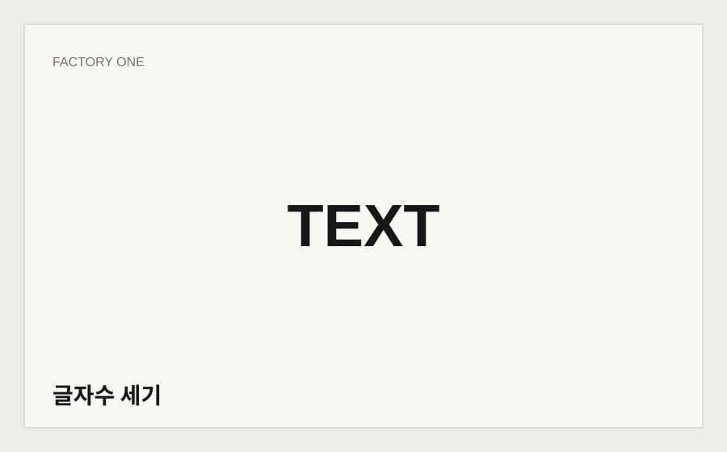
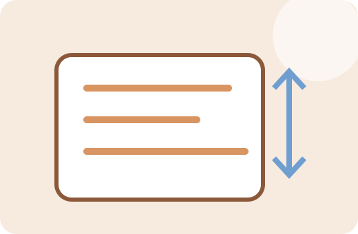
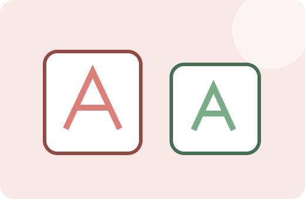
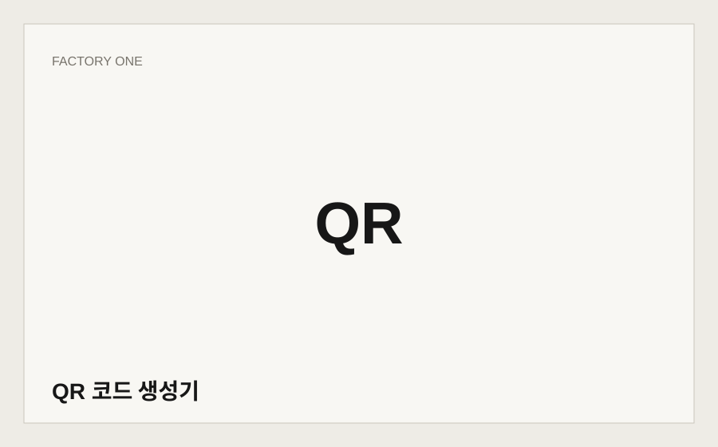
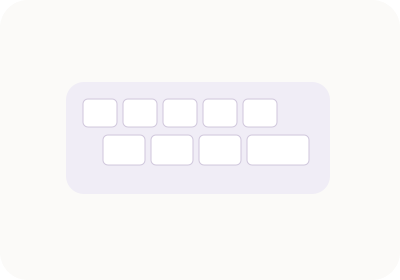

문서 분량
글자수 세기
공백 포함·제외 글자수와 단어·줄 수를 확인합니다.
Factory OneFREE
글자수만 세는 데서 끝나지 않고 복사한 문장을 정리하고, 목록 중복을 제거하고, 줄 순서를 다시 맞추는 실제 문서 작업 흐름을 한 센터에 모았습니다.


공백 포함·제외 글자수와 단어·줄 수를 확인합니다.

공백·빈 줄을 선택적으로 정리하고 전후 분량을 비교합니다.
목록에서 중복된 줄을 제거하고 최초 순서를 유지합니다.

가나다·숫자·길이순으로 여러 줄을 정렬합니다.

대문자·소문자·Title·snake·kebab 형식으로 변환합니다.

URL이나 텍스트를 QR 코드로 생성합니다.

한영 전환을 잘못하고 입력한 문자열을 두벌식 자판 기준으로 복구합니다.
텍스트 정리 기능은 입력 내용을 브라우저 안에서 처리합니다. 기능마다 전후 결과를 바로 확인할 수 있게 하고, 반복 문서작업에서 실제로 시간을 줄이는 방향으로 구성했습니다.